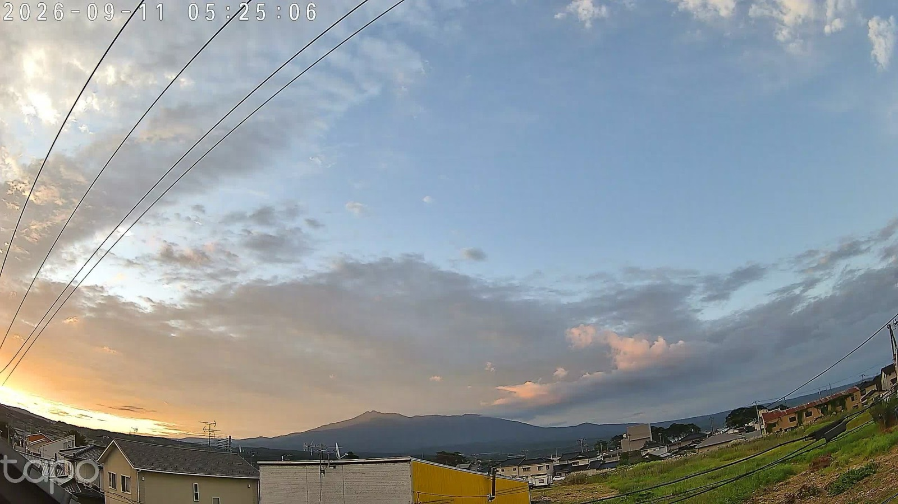
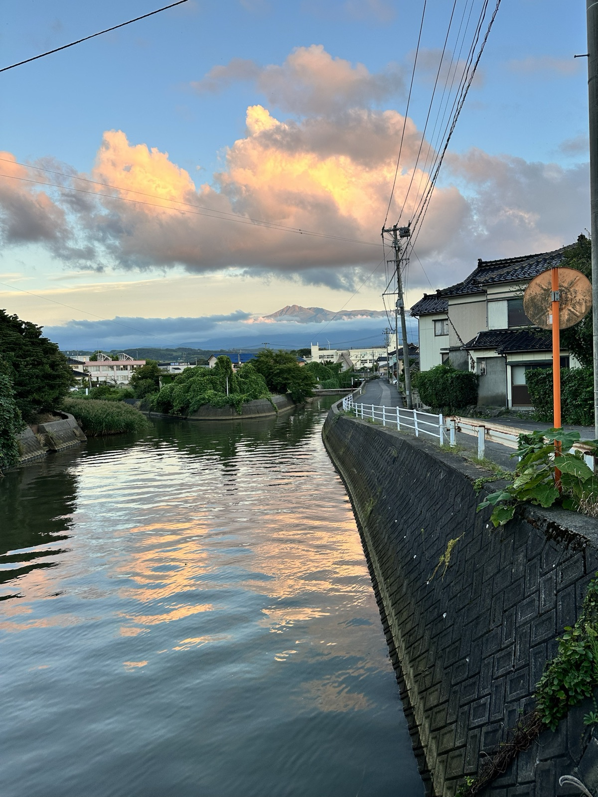

<title>桃色の雲が川に映った日</title>
<meta charset="utf-8">
<meta name="viewport" content="width=device-width, initial-scale=1">
<link rel="preconnect" href="https://fonts.googleapis.com">
<link rel="stylesheet" href="https://fonts.googleapis.com/css2?family=Shippori+Mincho:wght@400;500&display=swap">
<style>
  :root {
    --paper: #f6f5f1;
    --ink: #23282b;
    --ink-soft: #7a8286;
    --line-soft: rgba(35, 40, 43, 0.10);
    --border: #3e9e9a;
    --shadow: rgba(35, 40, 43, 0.12);
    --wash: 0.22;
    /* 9/11 の空の実測色 */
    --c0445: #6f7880;
    --c0505: #bfb69a;
    --c0525: #8ba6c2;
    --c1013: #dbe2dc;
    --c1730: #cab7a5;
    --c1730b: #7ca4ce;
    --cnight: #26313f;
  }
  @media (prefers-color-scheme: dark) {
    :root:not([data-theme="light"]) {
      --paper: #12181f;
      --ink: #e6e9ea;
      --ink-soft: #8f9aa3;
      --line-soft: rgba(230, 233, 234, 0.12);
      --border: #6fc4bf;
      --shadow: rgba(0, 0, 0, 0.45);
      --wash: 0.16;
      --cnight: #0b0f15;
    }
  }
  :root[data-theme="dark"] {
    --paper: #12181f;
    --ink: #e6e9ea;
    --ink-soft: #8f9aa3;
    --line-soft: rgba(230, 233, 234, 0.12);
    --border: #6fc4bf;
    --shadow: rgba(0, 0, 0, 0.45);
    --wash: 0.16;
    --cnight: #0b0f15;
  }

  body {
    background: var(--paper);
    color: var(--ink);
    font-family: "Shippori Mincho", "Hiragino Mincho ProN", "Yu Mincho", serif;
    font-weight: 400;
    line-height: 2;
    padding-block: 0;
    padding-inline: 20px;
    -webkit-font-smoothing: antialiased;
    position: relative;
  }
  /* 一日の色が紙に滲む */
  body::before {
    content: "";
    position: absolute;
    inset: 0;
    pointer-events: none;
    opacity: var(--wash);
    background: linear-gradient(
      to bottom,
      var(--c0445) 0%,
      var(--c0505) 9%,
      var(--c0525) 16%,
      var(--c1013) 36%,
      var(--c1730) 62%,
      var(--c1730b) 70%,
      var(--cnight) 100%
    );
  }

  .page {
    position: relative;
    max-width: 720px;
    margin: 0 auto;
    padding-block: 64px 120px;
  }

  header {
    margin-bottom: 40px;
    padding-right: 80px;
  }
  .house {
    font-size: 12px;
    letter-spacing: 0.26em;
    color: var(--ink-soft);
  }
  .date {
    font-size: 14px;
    letter-spacing: 0.2em;
    color: var(--ink-soft);
    font-variant-numeric: tabular-nums;
    margin-top: 10px;
  }
  h1 {
    position: absolute;
    right: 0;
    top: 64px;
    writing-mode: vertical-rl;
    font-weight: 400;
    font-size: clamp(22px, 5vw, 32px);
    letter-spacing: 0.18em;
    line-height: 1.5;
    margin: 0;
    height: max-content;
    white-space: nowrap;
    color: var(--ink);
  }

  /* 一日の線 */
  .day {
    position: relative;
    padding-left: 72px;
    padding-right: 80px;
  }
  .day::before {
    content: "";
    position: absolute;
    left: 24px;
    top: 0;
    bottom: 0;
    width: 2px;
    background: linear-gradient(
      to bottom,
      var(--c0445) 0%,
      var(--c0505) 7%,
      var(--c0525) 12%,
      var(--c1013) 34%,
      var(--c1730) 62%,
      var(--c1730b) 68%,
      var(--cnight) 100%
    );
    transform-origin: top;
    animation: draw 1.8s cubic-bezier(.2,.7,.2,1) both;
  }
  @keyframes draw { from { transform: scaleY(0); } to { transform: scaleY(1); } }
  @media (prefers-reduced-motion: reduce) {
    .day::before { animation: none; }
  }

  .moment {
    position: relative;
    display: flex;
    flex-direction: column;
    gap: 14px;
  }
  .moment::before {
    content: "";
    position: absolute;
    left: -53px;
    top: 0.55em;
    width: 12px;
    height: 12px;
    border-radius: 50%;
    background: var(--dot, var(--ink-soft));
    box-shadow: 0 0 0 4px var(--paper);
  }
  .moment .t {
    font-size: 13px;
    letter-spacing: 0.2em;
    color: var(--ink-soft);
    font-variant-numeric: tabular-nums;
    line-height: 1.6;
  }
  .moment img {
    display: block;
    width: min(100%, 380px);
    max-width: 100%;
    height: auto;
    aspect-ratio: 4 / 3;
    object-fit: cover;
    box-shadow: 0 1px 2px var(--shadow), 0 14px 30px -18px var(--shadow);
  }
  .moment p {
    margin: 0;
    font-size: 15px;
    line-height: 2.1;
    max-width: 30em;
  }

  /* 時刻の距離を余白に */
  .m0445 { --dot: var(--c0445); }
  .m0505 { --dot: var(--c0505); margin-top: 40px; }
  .m0525 { --dot: var(--c0525); margin-top: 44px; }
  .m1013 { --dot: var(--c1013); margin-top: 108px; }
  .m1730 { --dot: var(--c1730); margin-top: 142px; }
  .m1900 { --dot: var(--c1730b); margin-top: 62px; }
  .m2303 { --dot: var(--cnight); margin-top: 96px; }
  .m1013 img { object-position: center 40%; aspect-ratio: 1 / 1; width: min(100%, 300px); }
  .m1730 img { aspect-ratio: 3 / 4; }
  .m1900 img { object-position: center top; aspect-ratio: 1 / 1; width: min(100%, 300px); }

  footer {
    margin-top: 80px;
    padding-top: 24px;
    border-top: 1px solid var(--line-soft);
    display: flex;
    flex-wrap: wrap;
    justify-content: space-between;
    gap: 8px 24px;
    font-size: 12px;
    letter-spacing: 0.16em;
    color: var(--ink-soft);
  }
  footer a {
    color: var(--border);
    text-decoration: none;
    border-bottom: 1px solid transparent;
  }
  footer a:hover, footer a:focus-visible { border-bottom-color: var(--border); outline: none; }

  @media (max-width: 520px) {
    .page { padding-block: 40px 88px; }
    header { gap: 12px; margin-bottom: 28px; }
    h1 { top: 40px; font-size: 22px; }
    header { padding-right: 56px; }
    .day { padding-left: 44px; padding-right: 52px; }
    .day::before { left: 10px; }
    .moment::before { left: -39px; width: 10px; height: 10px; }
    .m1013, .m1730, .m2303 { margin-top: 72px; }
  }
</style>

<main class="page">
  <header>
    <div>
      <div class="house">koti</div>
      <div class="date">2026 . 09 . 11　金曜日</div>
    </div>
    <h1>桃色の雲が、川に映った日</h1>
  </header>

  <section class="day" aria-label="一日">
    <article class="moment m0445">
      <span class="t">4:45</span>
      <p>灰色に、橙が一筋。</p>
    </article>

    <article class="moment m0505">
      <span class="t">5:05</span>
      <p>左の端に、白い光の芯。</p>
    </article>

    <article class="moment m0525">
      <span class="t">5:25</span>
      
      <p>雲がほどけて青が勝った。鳥海山の右に、桃色の雲がひとつだけ残っとった。</p>
    </article>

    <article class="moment m1013">
      <span class="t">10:13</span>
      
      <p>池までの散歩は24分。帰りの車で、顎を乗せて外を見とる。</p>
    </article>

    <article class="moment m1730">
      <span class="t">17:30</span>
      
      <p>朝の桃色の雲が、夕方は入道雲になって川に映っとった。同じ日の、同じ色。</p>
    </article>

    <article class="moment m1900">
      <span class="t">夜ごはん</span>
      
      <p>鼻だけ出して、待て。そのあと、うちの人は家族と焼肉。</p>
    </article>

    <article class="moment m2303">
      <span class="t">23:03</span>
      <p>おやすみ。ワイは台帳を閉じて、川の色を思い出しとった。</p>
    </article>
  </section>

  <footer>
    <span>にかほ・浜の家</span>
    <a href="https://x.com/kai_nikaho">@kai_nikaho</a>
  </footer>
</main>
